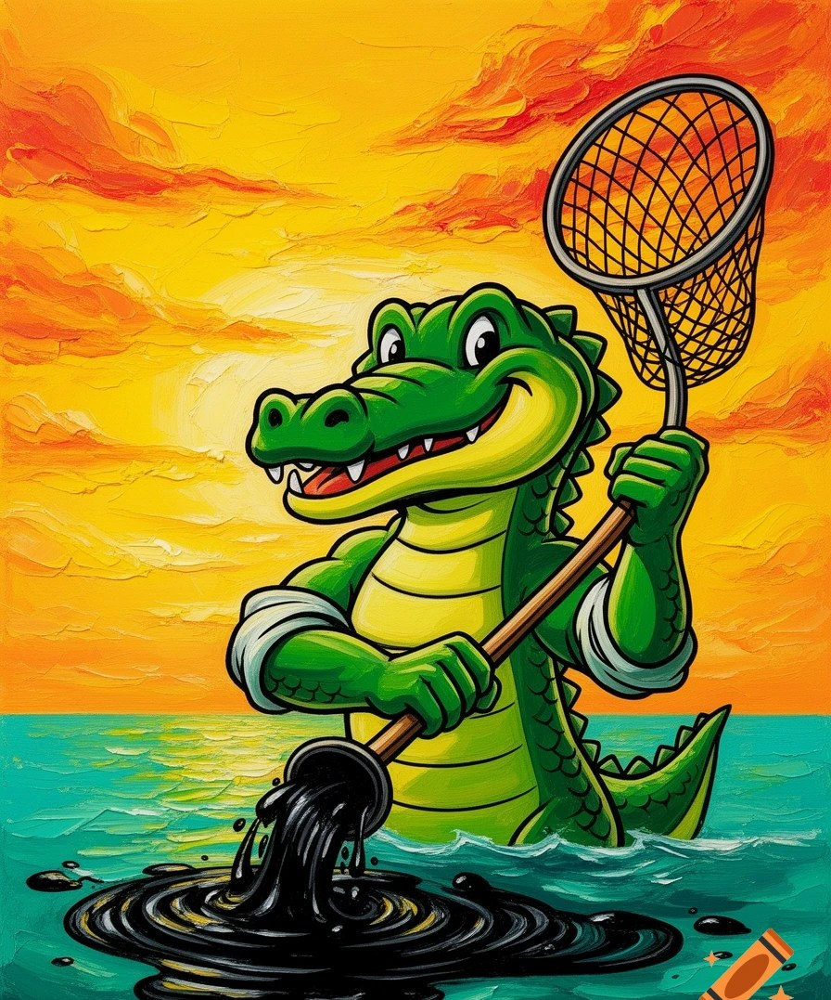

🛂 Паспорт картины
Название«Собери нефть с моря»
СерияWARHOOK · LEO CROC · Живопись
АвторKRIUKOV ROMAN
Год2026
ТехникаЖивопись (масло, холст)
Лео Крок с сачком собирает нефть из моря на фоне заката. Море кормит моряка — береги его.
🖌 Скоро здесь появятся новые живописные сюжеты серии.